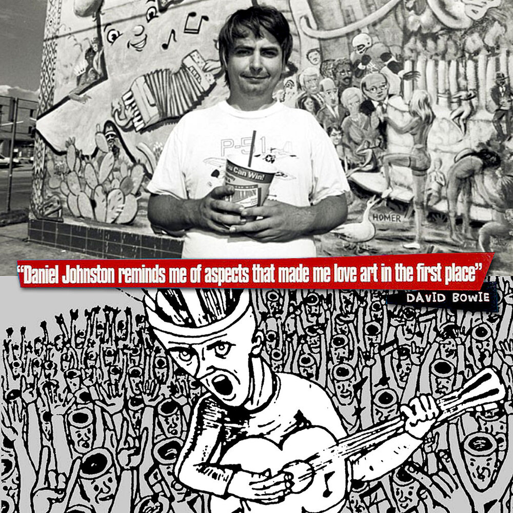

"Music is certainly everything that one listens to with the intention of listening to music."
- Luciano Berio
Introduction
So, I lied. Hip-hop was not this class's most challenging lesson. Today's lesson is. Experimental music. But, just as with hip-hop, I'm going to have to ask you to keep an open mind—a REALLY open mind. We are going to be dealing with sound itself on its own terms.
We're going to slip the bounds of Western 12 tone equal temperament. Heck, we're going to escape all musical systems. We're going to listen to people with zero musical skill bringing their full authentic selves to us through their own musical expression. We're going to let a roll of the dice pick notes on a staff. We're going to let pure randomness fuzz the sine-waves that undulate through the air. And, at the last, we will venture into pure noise.
The music in this lesson will rarely be "enjoyable" in the traditional sense. At least at first. This class is about pure experience. About communing with sound and your own sense of hearing in ways you never have before, in ways you could never have conceived of, in ways no person could have.
This is music beyond the edge.
There is no historical prologue to this lesson. As long as beings have knocked against a tree or a rock and thought, "Hunh, interesting," there has been experimental music. So, instead, we'll need to think conceptually and allow that to guide us. We are dealing with all sound here, anything perceivable. The range of human hearing is roughly 20Hz to 20 kHz—a rather wide world. So, where to begin?
For me, it began with a few preconceptions and a couple of Google searches. I imagined, at the time, that I have a few handful of hours ahead of me. A dozen or so, perhaps spread over an intense weekend. But I soon realized how mistaken I'd been. Three straight weeks of research took over my life. Not just a little here and there, but whole days, 12 hours a day, whirling through unimaginable, incomprehensible soundscapes. The last arrangements to this lesson fell into place almost as I sat down to teach it for the first time. Experimental music seemed so simple—how long could it take to research randomness and noise? But I became a person obsessed. I still am. Wonder and fantasy have filled me and brought me to my knees before an endless soundscape the likes of which I had never ever contemplated heretofore. And still and still and still there is so much I could not include. Already I've cut the vast majority of what I wanted to share.
But we have a little less than two hours. Not three weeks. So, let's try a different approach.
Figuring out how to categorize the elements of this lesson was a massive challenge. To keep it short and sweet, ultimately, what we're really doing is examining music that is guided primarily by a spirit of "what if...?"
What if I let an ancient Chinese book guide my machinations? What if I place two speakers exactly this many feet apart and play exactly these opposing frequencies? What if my three daughters—who've never touched an instrument—form a band? What if I throw a lightbulb at a guitar? What if my great talent is love, and I want to express it through my least talent, music?
Make sure you don't check out. Re-engage those muscles of patience so long deadened by social media and streaming. Focus, focus, focus on the sound. Warning: There will not always be meaning—do not look for it. There is no more meaning to a John Cage piece than there is to the jag turns of a crack in a mirror. Sometimes it will be pure meaning. Daniel Johnston's songs, like, "Love Will Find You In The End" are pure, raw meaning. Some lack talent; some are brilliant, if strange; for some, there is no point in discussing "talent". All along the road there is charm, adventure, and fascination to be had.
Feel free to laugh. Feeling skeptical is fine. Cringing is understandable. All I ask and all I suggest is that you don't turn off. Stay curious.
Finally, I leave you with my ever-repeating exhortation to re-visit this music. This request is both more essential and more difficult than it has been with previous lessons. It is more essential because the only way to grasp the importance and interest of most of these pieces is through complete repeated listenings. What on first listen is a mere jumble of nonsense slowly reveals itself to you over time. It's also more essential because while a hip-hop, electronic, or country song has melodic lines that burrow into your subconscious, the pieces in this experimental class rarely do (exceptions being the Outsider music and avant-garde music sections). Finally, much of this music (especially the "noise" section) requires you to be able to hear the recording in exceptionally high fidelity in order to get the real point of it all. And, frankly, the nuanced textures just can't be transmitted well over Zoom. Som would even say the only way to really "get" noise is to go to a live performance and cut out the digital middleman altogether.
And, of course, for all the reasons that it is so imperative to revisit this music, it is also hard to recommend you do so. I know it's not necessarily "easy" to return to a lot of this stuff. How many times can you listen to a synth wheeze out of tune, or a pane of glass shatter, or a grown man crawl on the ground, screaming, while all but fellating a microphone? Well, I don't know the answer to that. But I encourage you to find out.
Let's begin.
“If you develop an ear for sounds that are musical it is like developing an ego. You begin to refuse sounds that are not musical and that way cut yourself off from a good deal of experience.”
- John Cage
Two Topics I Couldn't Fit Anywhere Else: A Collection
Circuit Bending
Circuit bending is a fun little nook of the experimental sound scene—really, it's primarily a hobbiest area—one even you could jump into right now with childish zeal. Basically, you take consumer electronic musical devices, open them up, and experiment with the guts. What happens if you short a resistor? What if you add one of your own? Maybe you connect two wires for no good reasons. It's pure exploratory fun.
Most hobbists will just use cheap or second-hand devices that run on batteries. This way, if you fry something completely, it's not a huge loss.
This strange micro-community produces some really wild things!
Furby Organ!
Barbie Keyboard made weird :-P
Circuit-bent talking Wonder Bible
Sound Painting
In this art, the composer communicates the composition in their head directly to the musicians through a mutually understood sign-language.
“If something is boring after two minutes, try it for four. If still boring, then eight. Then sixteen. Then thirty-two. Eventually one discovers that it is not boring at all.”
- John Cage
Luigi Russolo
Risveglio di una Citta
1914
Performed using Russolo's experimental instruments, the intonarumori, a series of differently constructed (though similar-looking from the outside) boxes that each acoustically produced a unique noise.
"The Industrial Revolution created an entirely new landscape of sounds to explore. The noises of metal screeching and the construction of skyscrapers gave listeners a greater capacity to experience new sounds."
- Luigi Russolo
Perhaps this seems a bit primitive and strange. But truly the modern sense of "noise music", and in some sense "experimental music", begins with Russolo (and finds its more musical foothold with Shoenberg). So, it seems to me important, then, to give him a voice, a chance to explain himself at length, so as to lay the groundwork to come.
Noise as a genre is exactly what it sounds like. It's a genre of music that aims to draw your attention to all the things we don't think to listen to. By bringing attention to noise, we recontextualize it as something desirable. Have you ever really sat back and listened to the all the little sounds that make up the big sounds from a backhoe at work? Have you ever thought to tap a box of tea, and listen? Have you ever seen a man shove a microphone all the way to the back of his mouth and scream as hard as he can for twenty minutes straight? Can you imagine what that experience would be? After five minutes? Ten? Nineteen?
For sure, it's funny to think about. But after you've laughed, put aside the sense of absurdity and draw your attention to all the sounds, the noises. All that part of your daily life you give so little thought to. And, then, maybe laugh again. Sometimes it's pretty darn funny.
Noise music really began in the early 20th century, pioneered by futurists like Luigi Russolo who wrote what is probably the first manifesto on the topic, L'Arte dei Rumori, or The Art of Noises, which I will be reading an extended exceprt from momentarily.
The Industrial Revolution brought with it a whole vast new world of strange sounds, and the noise movement sought to comprehend the music of industry through a varity of means.
For those of you interested in "strange" art, the most well-known noise artist may be John Cage. And you may be pelased to know that I've been playing his most famous work, 4'33" on a loop since the lesson started.
For those less familiar with the more twisted nooks of the music world, the most famous artist in the arena of noise would probably be Lou Reed. He's more well known for his various work with The Velvet Underground, but his standalone album, Metal Machine Music, gained him almost equal notoriety in a different corner of the music world.
But for those deep in the know, it's really Russolo who started it all, and his words, over a hudnred eyars old now, written just before the Great War began, still ring true. Let's ring those words out again here.
Everyone will recognize that each sound carries with it a tangle of sensations, already well-known and exhausted, which predispose the listener to boredom, in spite of the efforts of all musical innovators. We futurists have all deeply loved and enjoyed the harmonies of the great masters, Beethoven and Wagner have stirred our nerves and hearts for many years. Now we have had enough of them, and we delight much more in combining in our thoughts the noises of trams, of automobile engines, of carriages and brawling crowds, than in bearing again the "Eroica" or the "Pastorale.
We cannot see the enormous apparatus of forces that the modern orchestra represents without feeling the most profound disillusionment before its paltry acoustical results. Do you know of a more ridiculous sight than that of twenty men striving to redouble the mewling of a violin? Naturally, that statement will make the musicomaniacs scream-and perhaps revive the sleepy atmosphere of the concert halls. Let us go together, like futurists, into one of these hospitals for anemic sounds. There-the first beat brings to your ear the weariness of something heard before, and makes you anticipate the boredom of the beat that follows. So let us drink in, from beat to beat, these few qualities of obvious tedium, always waiting for that extraordinary sensation that never comes. Meanwhile, there is in progress a repugnant medley of monotonous impressions and of the cretinous religious emotion of the Buddha-like listeners, drunk with repeating for the thousandth time their more or less acquired and snobbish ecstasy. Away! Let us leave, since we cannot for long restrain ourselves from the desire to create finally a new musical reality by generously handing out some resounding slaps and stamping with both feet on violins, pianos, contrabasses, and organs. Let us go!
It cannot be objected that noise is only loud and disagreeable to the ear. It seems to me useless to enumerate all the subtle and delicate noises that produce pleasing sensations.
To be convinced of the surprising variety of noises, one need only think of the rumbling of thunder, the whistling of the wind, the roaring of a waterfall, the gurgling of a brook, the rustling of leaves, the trotting of a horse into the distance, the rattling jolt of a cart on the road, and of the full, solemn, and white breath of a city at night. Think of all the noises made by wild and domestic animals, and of all those that a man can make, without either speaking or singing.
Let us cross a large modern capital with our ears more sensitive than our eyes. We will delight in distinguishing the eddying of water, of air or gas in metal pipes, the muttering of motors that breathe and pulse with an indisputable animality, the throbbing of valves, the bustle of pistons, the shrieks of mechanical saws, the starting of trams on the tracks, the cracking of whips, the flapping of awnings and flags. We will amuse ourselves by orchestrating together in our imagination the din of rolling shop shutters, the varied hubbub of train stations, iron works, thread mills, printing presses, electrical plants, and subways.
Nor should the newest noises of modern war be forgotten. Recently, the poet Marinetti, in a letter from the trenches of Adrianopolis, described to me with marvelous free words the orchestra of a great battle:
"every 5 seconds siege cannons gutting space with a chord ZANG- TUMB-TUUUMB mutiny of 500 echos smashing scattering it to infinity. In the center of this hateful ZANG-TUMB-TUUUMB area 50 square kilometers leaping bursts lacerations fists rapid fire batteries. Violence ferocity regularity this deep bass scanning the strange shrill frantic crowds of the battle Fury breathless ears eyes nostrils open! load! fire! what a joy to hear to smell completely taratatata of the machine guns screaming a breathlessness under the stings slaps traak-traak whips pic-pac-pum-tumb weirdness leaps 200 meters range Far far in back of the orchestra pools muddying huffing goaded oxen wagons pluff plaff horse action flic flac zing zing shaaack laughing whinnies the tiiinkling jiingling tramping 3 Bulgarian battalions marching croooc craaac [lowly] Shumi Maritza or Karvavena ZANG-TUMB-TUUUMB toc-toc-toc-toc [fast] crooc-craaac [slowly] crys of officers slamming about like brass plates pan here paak there BUUUM ching chaak (very fast) cha-cha-cha-cha-chaak down there up there all around high up look out your head beautiful! Flashing flashing flashing flashing flashing flashing footlights of the forts down there behind that smoke Shukri Pasha communicates by phone with 27 forts in Turkish in German Allo! Ibrahim! Rudolf! allo! allo! actors parts echos of prompters scenery of smoke forests applause odor of hay mud dung I no longer feel my frozen feet odor of gunsmoke odor of rot Tympani flutes clarinets everywhere low high birds chirping blessed shadows cheep-cheep-cheep green breezes flocks don-dan-don-din-baaah Orchestra madmen pommel the performers they terribly beaten playing playing Great din not erasing clearing up cutting off slighter noises very small scraps of echos in the theater area 300 square kilometers Rivers Marizza Tungia stretched out Rodolpi Mountains rearing heights loges boxes 2000 shrapnels waving arms exploding very white handkerchiefs full of gold srrrrr- TUMB-TUMB 2000 raised grenades tearing out bursts of very black hair ZANG-srrrrr-TUMB-ZANG TUMB-TUUUMB the orchestra of the noises of war swelling under a held note of silence in the high sky round golden balloon that observes the firing..."
We want to glve pitches to these diverse noises, regulating them harmonically and rhythmically. Giving pitch to noises does not mean depriving them of all irregular movements and vibrations of time and intensity but rather assigning a degree or pitch to the strongest and most prominent of these vibrations. Noise differs from sound, in fact, only to the extent that the vibrations that produce it are confused and irregular. Every noise has a pitch, some even a chord, which predominates among the whole of its iregular vibrations. Now, from this predominant characteristic pitch derives the practical possibility of assigning pitches to the noise as a whole. That is, there may be imparted to a given noise not only a single pitch but even a variety of pitches without sacrificing its character, by which I mean the timbre that distinguishes it. Thus, some noises obtained through a rotary motion can offer an entire chromatic scale ascending or descending, if the speed of the motion is increased or decreased.
Every manifestation of life is accompanied by noise. Noise is thus familiar to our ear and has the power of immediately recalling life itself. Sound, estranged from life, always musical, something in itself, an occasional not a necessary element, has become for our ear what for the eye is a too familiar sight. Noise instead, arriving confused and irregular from the irregular confusion of life, is never revealed to us entirely and always holds innumerable surprises. We are certain, then, that by selecting, coordinating, and controlling all the noises, we will enrich mankind with a new and unsuspected pleasure of the senses. Although the characteristic of noise is that of reminding us brutally of life, the Art of Noises should not limit itself to an imitative reproduction. It will achieve its greatest emotional power in acoustical enjoyment itsclf, which the inspiration of the artist will know how to draw from the combining of noises.
Arnold Shoenberg
The old joke goes: "Schoenberg walks into a bar and order a gin and tonic, hold the tonic." See, Schoenberg did a naughty thing, the sly old dog: He tried to kill the tonic. That is to say, in any line of traditional Western music there is a note that all the other notes continuously reference and return to. The "tonic" is the centerpoint on which the whole key rests, and without it the musical sense is left adrift. Schoenberg, unlike many of the others in this lesson, was not trying to undo or subvert Western music. Indeed, he was in love with it and wanted to propagate it far into the future. His way of doing this was to make a Romanov of the tonic and install an anarchist in its place, giving a democratic equality to each note in the 12 tones of the Western system. Such a contradiction could hardly work, of course. As Gelnn Gould quipped, speaking of Schoenberg's faith in his 12-tone system, "Schoenberg himself once said, 'It vil ensure ze supremacy of German music for ahnahzah hundred yeers.' Would you believe thirty-five?"
Suite for Piano, Op.25
1921
Gyorgy Ligeti
Artikulation
1958
Ligeti was a Hungarian composer who was instrumental in driving the development of the avant-garde in music in the mid-20th century. His work may feel familiar at times—while he never explicitly composed for film, a lot of his work has been absorbed into cinema by directors who were fans of his, such as Kubrick and Scorsese.
The work we're listening to here is one of his few electronic pieces. The piece was composed using a mix of chance and explicit composition. Ligeti explained: "First I chose types [of noise, or artificial phonemes] with various group-characteristics and various types of internal organization, as: grainy, friable, fibrous, slimy, sticky and compact materials. An investigation of the relative permeability of these characters indicated which could be mixed and which resisted mixture." He then created recordings of these sounds, cut them individually from the taped recording, and grouped them into bins according to their characteristics. He then reached into the bins at random, took out a slice of recording, and taped it together.
The graphical score we'll be viewing along with the music was created after the fact by a graphic designer with Ligeti's approval. It is designed to guide the listener towards a "unique and appealing aesthetic."
Pierre Schaeffer
Apostrophe
The father of musique concrète and sampling. His innovations included, "pioneering the use of magnetic tape by splicing and looping, and introducing several new inventions: a three-track tape recorder, a 10-head delay and loop machine (the morphophone), a keyboard-controlled device capable of replaying loops at various speeds (the phonogene), and several amplification systems used for spatial experimentation with sound."
John Cage
How do you introduce a person like John Cage? It could be argued that John Cage is the most influential person in experimental music, perhaps in modern music altogether. His most famous work is probably 3'44", a piece performed at the piano where the pianist does absolutely nothing for exactly three minutes and forty-four seconds. It is not, as is often assumed, an investigation of silence, but rather a revelation that there is no such thing as silence. If you are truly listening during a performance of 3'44", even if you are all alone in a perfectly insulated room, you will hear your own blood. The silence of 3'44" is truly an exploration of the omnipresence of sound.
He's also well-remembered for using the I Ching, an ancient Chinese text, to create random patterns for his music, either in the arrangement of parts, or in the adjustments to the instruments, or some combination.
Today's first selection is one he performed in front of the whole country on "I've Got a Secret." It's called Water Walk. And, while it may seem strange and chaotic, it actually has a very specific set of instructions noted down in a textual and graphical score that you can view here.
I've also included one of his more "traditional" (if it can be called that, even with the scare quotes around it) piano pieces. The screws wound between the wires would have been placed at random. Whether the pianist followed Cage's randomization instructions, or reproduced his own randomized result, I don't know.
What I do know is that John Cage is perhaps the best composer to learn and discuss the term aleatoric. It's a word I imagine few are familiar with, but it informs much of experimental music, and should be elaborated on before we continue much further.
Aleatoric music is a mid-ground between pure chance and pure composition. Parts of it are left to chance, though there are some limits to how things may unfold.
We can find this type of music even in Mozart's time and the Musikalisches Würfelspiel, or "musical dice game." There would be a sequence of measures of music, the order of which would be determined at the performance by the roll of dice.
John Cage's works are a more modern example of this. Famously, in some of his works, he would use the I Ching to determine a variety of features of his composition. But, still, there was always some limit. Perhaps the I Ching would determine the placement of a screw in the wires of a piano, but it would always be a piano used.
There were also the graphical scores used by many experimental composers in the mid-20th century. We'll see some examples of these later on, but to sum up the idea, traditional musical notation is done away with and some sort of drawing is meant to guide the player in their performance, rather than giving specific isntructions.
As a twist, when the music is pre-recorded, as in the way of much electronic music, the score becomes a Virgil to the the listener, guiding them into the depths of the composer's madness, however many layers deep it may go.
The aleatoric bends and twists the ideas of composer, performer, and listener.
Another interesting example of the aleatoric—and one which most of us have experienced at some point—is music in games. In this we find the performer unaware of their performance. As one moves through the world of a game, the music needs to adjust to player input and the condition of the gameplay. In some versions of Tetris, for example, as your stack of blocks gets closer to the danger zone, the speed of the music picks up. In adventure games, as you move from area to area, the music will change to express the nature of your new surroundings. All of this needs to feel like a single uninterrupted experience, yet it is controlled unconsciously all along by the player.
Later, we'll find the Fluxus movement, which puts emphasis on the performance itself, and less on the composition. In fact, even the noise which we'll discover later is built on an aleatoric approach to music. In most cases, there is a chaos (one cannot know how a pane of glass will break), but also a control (one knows they will break a pane of glass).
John Cage may not have been the inventor of this approach, but he is perhaps the greatest figurehead of it.
Water Walk
1960
Sonata V
1948
Harry Partch
Harry Partch wasn't content to experiment with what already existed, nor was he going to just leave things to chance. No, Partch dug deep into the world of sound and crafted a music that was uniquely his.
For starters, Partch decided to chop up the 12 tone system so familiar to Western musicians and listeners, refining it into a mathematically constructed, 43 microtone system that he used for his music. However, he was perhaps most instantly recognizable for the incredible array of instruments he created himself. Most easily notable on stage are bamboo marimbas, chromelodeons (organs modified to use his 43-tone system), the cloud-chamber bowls (a series of Pyrex bowls suspended on strings from a bar), and the gourd tree (12 bells bolted to a eucalyptus tree). There are more—many more—but these are perhaps the most immediately noticable.
And on the Seventh Day Petals Fell in Petaluma | Verse 34
And on the Seventh Day Petals Fell in Petaluma | Verse 24
Castor & Pollux
Iannis Xenakis
A Greek civil engineer by training, he did not begin studying music until he was almost thirty. But he studied hard, and under the advisement of a great French composer, he began to apply mathematical frameworks to his music.
Metastaseis
1954
Pithoprakta
1956
Terry Riley
Terry Riley's work sought to disrupt the listeners' conception of time, to fizzle out one's intution for temporal awareness, like an aural hallucinogenic. In C is perhaps Riley's more well known work, and one of the very first minimalist works ever composed. Let's read his instructions to the players.
"All performers play from the same page of 53 melodic patterns played in sequence. Any number of any kind of instruments can play. A group of about 35 is desired if possible but smaller or larger groups will work. If vocalist(s) join in they can use any vowel and consonant sounds they like.
Patterns are to be played consecutively with each performer having the freedom to determine how many times he or she will repeat each pattern before moving on to the next. There is no fixed rule as to the number of repetitions a pattern may have, however, since performances normally average between 45 minutes and an hour and a half, it can be assumed that one would repeat each pattern from somewhere between 45 seconds and a minute and a half or longer.
It is very important that performers listen very carefully to one another and this means occasionally to drop out and listen. As an ensemble, it is very desirable to play very softly as well as very loudly and to try to diminuendo and crescendo together.
Each pattern can be played in unison or canonically in any alignment with itself or with its neighboring patterns. One of the joys of IN C is the interaction of the players in polyrhythmic combinations that spontaneously arise between patterns. Some quite fantastic shapes will arise and disintegrate as the group moves through the piece when it is properly played.
It is important not to hurry from pattern to pattern but to stay on a pattern long enough to interlock with other patterns being played. As the performance progresses, performers should stay within 2 or 3 patterns of each other. It is important not to race too far ahead or to lag too far behind.
...
The tempo is left to the discretion of the performers, obviously not too slow, but not faster than performers can comfortably play.
...
IN C is ended in this way: when each performer arrives at figure #53, he or she stays on it until the entire ensemble has arrived there. The group then makes a large crescendo and diminuendo a few times and each player drops out as he or she wishes."
Terry Riley interview | The Drone
2015
In C
1964
Africa Express Presents: Terry Riley's In C Mali
October 2013 (Bamako, Mali)
Karlheinz Stockhausen
Stockhausen was a lot of things to many different people. He was an inspiration to both the Beatles and Igor Stravinsky, as well as Charles Mingus, Miles Davis, Herbie Hancock, and Anthony Braxton. It doesn't stop there—the Grateful Dead, Pink Floyd, Pete Townsend, Frank Zappa, Kraftwerk, and more. His Gesang der Jünglinge has been called "the first real masterpiece of electronic music." He approached music and noise in ways possibly inconceivable to those who came before him. I'll let his work speak for itself through two of his most notable pieces.
The Threnody to the Victims of Hiroshima was not, in fact, originally written with the victims in mind. Originally, the piece was titled—with a nod towards John Cage—8'37". It was after Penderecki, the Polish composer of the piece, sat down to hear the first live performance that he was inspired to rename the work in honor of the aforementioned victims.
This piece may suggest many images to a listener—buzzing insects, shrieking sirens, even a bomb exploding. The musical encyclopedist Nicolas Slonimsky felt that the work’s conclusion was “a massive tonal cloud of gray matter, encompassing two octavefuls of icositetraphonic harmony”—icositetraphonic denoting the division of an octave into twenty-four steps. It is nonetheless worth underscoring that Penderecki approached it on strictly musical terms. “First of all,” he wrote, “I was a string player. I was at that time still playing and working in the Warsaw Experimental Electronic Music Studio, experimenting with the violin and electronic instruments. . . . I think the electronic studio helped me at that time in experimenting with all those clusters you find. . . .” By clusters, he was referring to a practice established in new-music circles decades before—sonorities in which all the notes between high and low end-points are sounded at once. Traditionally, this was an agglomeration of chromatic half-tones, but in the Threnody, Penderecki’s clusters also encompass quarter-tones, with each player within a defined instrumental group playing a different pitch. This composition may sound to some listeners like a piece of electronic music transcribed for acoustic instruments. In fact, it was an acoustic conception from the outset, though emerging from a mind well acquainted with electronic sound.
The Threnody is scored for 52 strings, with each musician playing an individual line... All of the players employ extended techniques that go far beyond the normal string vocabulary of bowing or, for a special effect, plucking (pizzicato). The bows strike many places on the strings—along the fingerboard, on or near the bridge, between the bridge and the tailpiece, and so on. The musicians employ wide variations of vibrato and tremolo, sometimes changing the flutter of a note substantially as it is sustained, often connecting notes with seamless glissandos. They do these things at extremes of volume. They strike the body of their instruments with their bows or their fingers. “In my Threnody of 1960, the string instruments sound like percussion,” observed Penderecki in his 1997 interview. “Today, such a solution is nothing new.”
Details of his Threnody did indeed become much imitated. As part of his composition, Penderecki invented various symbols to signify the effects he envisioned; these became standard in new music graphic notation, just as the sounds themselves became adopted by other composers who worked at the outer limits of acoustic possibilities. No live performance of the Threnody can be replicated exactly; although the piece is written out in careful detail, Penderecki allows the musicians some leeway in interpreting the score, the aleatoric aspects extending even to letting the players decide in what order they may play certain groupings of notes. There are no bar-lines in the score; instead, the duration of pitches or gestures is indicated by timings, in seconds. The piece can seem to stand on the brink of chaos at many moments, yet the composer keeps it under attentive control much as composers have always done.
- James M. Keller
Threnody to the Victims of Hiroshima
1960
Benjamin Patterson
A founding member of the Fluxus movement, perhaps most charmingly identified by his work Paper Piece. I'm going to let this work, and therefore Patterson, speak for itself. (Performance isntructions transcribed by me from a letter from Patterson to his parents, Dec. 2, 1960)
Although I wrote this in August it is especially good and a lot of fun to perform at Christmas. I think you will find that this is really "modern music!" As you can see I am using sounds in this piece which until now have no been considered "musical". However if you pergorer this and listen carefully to the different varieties of sound and how they work together, i think you will find that they are at least amusing and even enjoyable. And music should be allowed to do no more than that sometimes.
The silent pause between each "sound event" is very important. Then you must listen very carefully. I hope you like this or at least have some fun with it.
" alt="">
Paper Piece
1960
Duo for Voice and a String Instrument
1961
Mauricio Kagel
While Mauricio Kagel worked in traditional, classical music forms, he also stepped wildly outside them as well. His playful, absurdist compositions would give instructions to performers, directing not just their hands and breath, but also their expressions and gait. Entrances were as important as the moment of playing. In the piece I've selected today, we can listen as two men control a whole orchestra of instruments with a mix of sinceretiy and silliness.
Two-Man Orchestra (a humorous selection)
2011
Two-Man Orchestra (a complete performance)
2011
Keith Rowe
Keithe Rowe wanted to develop his own approach to the guitar. In order to abandon all preconceptions, to escape all the techniques he knew—he laid the guitar flat. Such a simple motion allowed him to see the instrument in a new light. It came to him to manipulate the strings, pickups, and body in unorthodox ways. He applied various tools to the guitar, beyond the finger and pick. He needles, bows, iron, rubber, playing cards—whatever he could imagine—at the prone guitar, and let it sing.
A Dimension Of Perfectly Ordinary Reality
1990
Conlon Nancarrow
This crazy dude saw the player piano and was like, "I bet I can make that thing do things a human could never." And so he whipped up some of the craziest piano compositions a saloon has ever heard.
Study for Player Piano No. 1
1949
Hans Reichel
I love this term: Experimental Luthier. That's what Reichel was. How friggen cool is that?
Watching the Shades (I)
1986
?
June 12, 2009
Steve Reich
This is yet another artist who is best served by letting their art speak for itself. Yes, he's worked with Pauline Oliveros and Terry Riley. Yes, he's influenced King Crimson, Sufjan Stevens, and Brian Eno. Some have claimed him as "America's greatest living composer." But what's all that to opening our ears?
Pendulum Music
1968
Sextet
1984
Different Trains
1988
Music for 18 Musicians
1974
It's Gonna Rain
1965
Come Out
1966
Luciano Berio
SEQUENZA III
1966
Sequenza V
1966
Sinfonia
1969
Atsuhiro Ito
Ever seen someone play a flourescent lightbulb? Wanna?
improvisation from the Tokyo Experimental Performance Archive
Aug. 30, 2014
Aki Onda
"[Onda] is particularly known for his 'Cassette Memories' — works compiled from a 'sound diary' of field-recordings collected by using portable cassette recorder over a span of last three decades. He creates compositions, performances, and visual artworks from those sound memories."
improvisation from the Tokyo Experimental Performance Archive
Sep. 23, 2014
Yuichi Onoue
This dude straight up smashed a hurdy-gurdy and a shamisen together to make the kaisatsuko (回擦胡).
Within You Without You (Beatles cover)
2019
Justice Yeldham
This dude finds large broken panes of glass, slaps a receiver on it, and then blows across the glass to make utterly unique sounds. If it wasn't glass, it'd be SO METAL \m/_U.U_\m/
Interview with Justice Yeldham on The Feed
2018
Live performance
2019
The Residents
The mystery artists of this band deconstruct Western music and rebuild it whatever image was on their mind that day, apparently. I'm joking a bit with that line. It seems clear to me, from having listened to a large handful, that they were fairly considerate of how they constructed their work. They either tore apart the canon and rebuilt it as a pea shooter, or took sand and glue and threw up their own complex constructions, sticky and uncertain underfoot.
Commercial Album
1980
Sonic Youth
I'm a terrible music-lover-person. Of course I'd heard the name Sonic Youth before, but I'd never investigated them until this class. Heck, even at the start they hadn't made my list of artsits to include. It wasn't until I saw the endless list—like the Homeric read-off of Achaean ships that overwhelms you until you ignore it or engage it—of other experimentalists who had collaborated with them. If an artist is in this lesson, there's a greater than 50% chance they worked with these guys.
To me, Sonic Youth's sound is fairly comprehensible, but what the hell do I know? So, here is their first album, in all it's crunchy loveliness.
Confusion Is Sex
1983
100 Gecs
Welcome to avant-pop. Welcome to music that is unapologetically produced to hell and back. Welcome to music that, like Shoenberg before them, identifies the tools and constraints of the musical idiom of the day and subverts it. It's a palate cleanser agaisnt the overly self-serious pop of the last forty years. Never has pure absurdity sounded so good.
You see two bleach-blonde, gender-bent, 20-somethings wil'in' out to overproduced trash? Yeah, me too. And I love it.
money machine
2019
“There is no such thing as an empty space or an empty time. There is always something to see, something to hear. In fact, try as we may to make a silence, we cannot.”
- John Cage
Wendy Carlos
We visited Wendy Carlos during our electronic music class, but she's just important enough with her trailblazing musical efforts that I just had to include her again.
Switched-on Bach
1968
Maryanne Amacher
She was a student of Stockhausen, and yet was so out-there in her own approach to music, that even he (the man who composed a piece for helicopters) said she was an "alien." Hopefully that gives you a decent picture the sort of mad genius we're dealing with here.
She built her music by working with what she termed, "perceptual geography", aka sonic spatialization. This is basically the human, low-level equivalent of echolocation, the ability to hear a sound and place it properly in 3D space in your mind. So, she would use a large space, and then carefully arrange speakers around it—one foot this direction, spin it around, shift it left a few inches—, perhaps moving objects in the way of the sound, or even lugging the speakers into a separate room to be muffled. As you moved through the space she had adorned with sound, everything aural shifted according to her precise spatial desires.
But this alone was not enough envelope-pushing for her. It is one thing to accurately identify the direction of a sound, and even to note the way objects distort it. It's another to begin to question your sense of sound and direction, for the sounds in the speakers to cause you to emit noises within your own mind, separate from the outer world.
Amacher engaged an effect known as the Otoacoustic Emission. This is where the cochlea in the ears actually create their own sound caused by "combination tones". Combination tones are a psycho-acoustic phenomenon that occur when listening to two different frequencies. Essentially, your ear hears the sum and difference of the two input frequencies. So, if one speaker plays a 1300Hz note and another plays a 1100Hz note, your ears will then produce a 200Hz and 2400Hz tone on their own.
It's not too easy to experience this effect, however. You need very loud speakers, and you need to do it without headphones.
Personally, I find Amacher to be one of the most fascinating artists in this lesson. At the same time, her work is the most inaccessible. While others have worked to reproduce her efforts, it seems to me that one could only have truly expreienced her vision when she was alive and had personally arranged her devices. Her music was a trans-personal experience—in one way a deeply individual expression of her own sensibilities, and also a singular experience within the listener's self. Her work was so disruptive, it dismantled a person's own sense of perceptual geography. Many artists can break us down emotionally, or intellectually, but how many can wholly re-write our relationship with reality? Well, at least one. Maryanne Amacher.
“When played at the right sound level, which is quite high and exciting, the tones in this music will cause your ears to act as neurophonic instruments that emit sounds that will seem to be issuing directly from your head … (my audiences) discover they are producing a tonal dimension of the music which interacts melodically, rhythmically, and spatially with the tones in the room. Tones ‘dance’ in the immediate space of their body, around them like a sonic wrap, cascade inside ears, and out to space in front of their eyes … Do not be alarmed! Your ears are not behaving strange or being damaged! … these virtual tones are a natural and very real physical aspect of auditory perception, similar to the fusing of two images resulting in a third three dimensional image in binocular perception … I want to release this music which is produced by the listener …”
- Maryanne Amacher
Maryanne Amacher speaking at Ars Electronica. Linz, Austria
1989
Sound Characters (Making The Third Ear)
1999
Yoko Ono
Yoko Ono hardly needs me to introduce her. But she may need someone to defend her. So, I've included a great, short video that can help bring the skeptical around to her work.
The Case for Yoko Ono
2016
Why
1970
Fly
1971
Pauline Oliveros
Fun fact: Oliveros was a member of the faculty at UC San Diego. In reaction to the horrors of the world in the late 60s, she retreated within and began to develop her meditative relationship with sound. According to a review of her work in the New Yorker, "She started singing and playing long, extended drones on her accordion, spending nearly a year on a single note, an A." From there she expanded, developing her relationship with sound and mediation, writing out instructions that were one part zen, one part music. She built up the concept of "sonic awareness," or the ability to focus one's attention directly on the musicality of environmental sound. In this way, she was one of the true exponents of noise.
Deep Listening
1989
Accordion & Voice
1982
Éliane Radigue
Radigue was a french composer who worked largely in the realm of musique concrète, crafting her pieces with tape and the ARP 2500 modular synthesizer. Her work extended from her Tibetan Buddhist practice, particularly her Trilogie de la Mort, which musically follows the Bardo Tholo (Tibetan book of the Dead).
Trilogie de la Mort
1998
Charlotte Barron
Barron pioneered electronic sound in film, bringing it to wide audiences with 1956's Forbidden Planet. Prof. Barry Schrader said of her score, "At some points it’s actually impossible to say whether or not what you’re hearing is music, sound effect or both,” he said. “In doing this, they foreshadowed by decades the now-common role of the sound designer in modern film and video.”
The music and SFX of Forbidden Planet (documentary excerpt)
Forbidden Planet (overture)
1956
Mixed emotions
2000
Daphne Oram
Daphne Oram was the brilliant inventor of the Oramics machine, which allowed the composer to paint their music vision directly onto a surface which would then be read by the machine and translated into sound.
A member of the BBC, she paved the way for further innovation in electronic music by the likes of Delia Derbyshire
Short documentary about Oram (8:24)
Daphne Oram - Oramics (a collection of her music)
1958-1977
Electronic Sound Patters
1962 (her first EP)
Suzanne Ciani
She was a true master of synthetic sounds back when the era of synths was just beginning.
Ciani is one of electronic music’s earliest but lesser known pioneers, dubbed variously as the 'diva of the diode' and ‘America’s first female synth hero'."
Short documentary about her work on the pinball game Xenon
Buchla Concerts 1975
1975
Don Buchla Memorial Concerts
April 23, 2017
Quadraphonic Sound Performance @ LA Public Library
2019
Live Performance at P2 Art's Birthday Party in Stockholm, Sweden
Jan. 27, 2017
Delia Derbyshire
If Ciani was America's electronic pioneer, then Delia Derbyshire was the UK's. Most famous for her arrangement of the Doctor Who theme, she spent here career with the BBC, as well as in independent work, crafting new sounds from old ones.
The Delian Mode (documentary)
2009
Sea
1964
Falling
1964
Pot au Feu
1968
Electrosonic
Laurie Spiegel
Spiegel is like the Partch or Russolo of electronic music. She developed her own Mac based software way back in 1986 that coudl be used of rmusic composition. She would use algorithmic logic to construct her compositions.
Documentary on Laurie Spiegel
The Expanding Universe
1980
Unseen Worlds
1991
Obsolete Systems
2001
"I was at a house on Riverside Drive where people were invited to be present at a Zen service conducted by a Japanese Roshi. He did the ritual, rose petals and all. Afterwards tea was served with rice cookies. And then the hostess and her husband, employing an out-of-tune piano and a cracked voice, gave a wretched performance of an excerpt from a third-rate Italian opera. I was embarrassed and glanced towards the Roshi to see how he was taking it. The expression on his face was absolutely beatific."
- John Cage
Free Jazz
Free Jazz can be considered an umbrella term that encompases Free Jazz proper, Free Improvisation, and avant-garde Jazz. The music here began around the 60s and aims to break free of Jazz conventions. Destroy the meter; obliterate the tonic; flush the harmonies; chrush the chords. As more conventions are destroyed, so more yet must be destroyed; as new conventions arise, so must they too be brought asunder.
Ornette Coleman
Ornette Coleman could be considered the leading figure in the Free Jazz movement, and his album The Shape of Jazz to Come could be considered the moment all the concepts leading up to Free Jazz finally coalesced into a single idea.
"The most important thing I gained from Ornette Coleman’s music was the realisation that it is OK to create your own rules for music and that there is no need to conform to pre-existing conventions – even in terms of elements like rhythm, harmony and melody that normally cannot exist without conformity. Perhaps it’s possible for rhythms to expand or contract, or the criteria for the integrity of harmonies to be found in your own body and memories and not somewhere external. What, then, is necessary to hold music together? Ornette’s music let me think about that."
A contemporary of Ornette Coleman, Taylor also laid the foundations of Free Jazz, molding it before the fire, and driving it to the edge in years after.
The World of Cecil Taylor
1961
"Taylor's high-energy atonalism fit in well with the free jazz of the period but he was actually leading the way rather than being part of a movement... In fact, it could be safely argued that no jazz music of the era approached the ferocity and intensity of Cecil Taylor's.""
"What makes this particular album so fascinating is that we can actually hear the sound of bebop being stretched and ripped apart from inside, as if it’s the one of the Incredible Hulk’s unfortunate t-shirts."
"[Ascension was] the torch that lit the free-jazz thing. I mean, it really begins with Cecil [Taylor] and Ornette [Coleman] in '59, but Ascension was like the patron saint saying, 'It's OK—this is valid.' "
- David Liebman
"After nearly thirty-five years, it is still impossible to speak of Ascension without a word of caution. It is the single most vexatious work in jazz history. So, a word of caution: It can't hurt you. In fact, contrary to its reputation as the apogee in '60s free-jazz rants, the piece goes down as smooth as bourbon, at least after you've heard it a few times and can no longer be intimidated by its shock tactics... Ascension is based on a minor triad and a couple of ground chords for the ensemble passages—that's it. The format consists of alternating solos and ensemble passages, the latter mandated to climax as crescendos in which the wind instruments freely bellow. At first blush, it might be described as a terrible din periodically interrupted so that a soloist can bellow in peace... Coming to the end of the music's long night, you may blink at the silence in stunned relief and inscrutable rapture. Or you may not. In any case, return visits to Ascension reveal it as decreasingly monolithic. Fake notes—cackles and hollers and shrieks and squawks—are still notes, and fortuitous harmonies and melodies, forged in the cauldron of chance, will on repeated exposure seem as preordained as composed music."
- Gary Giddins
Ascension
1965
Albert Ayler
"Notes disappear into wide, irregular ribbons, fragmented, prismatic, wind-blown, undetermined, and filled with fury. Though the fury is frightening, dangerous, it achieves absolute certainty through being, musically, absolutely contained... Ayler seemingly rarely hears one note at a time—as if it were useless ever to consider the particles of a thing. He seems to want to scan all notes at all times and in this way speak to an expanded consciousness. And the consistency in this outpouring is a reference point from which his music takes shape... Ayler's music, as well as most avant-garde music, is, at best, difficult to listen to. It is nevertheless a very direct statement, the physical manifestation of a spiritual or mystical ritual. Its logic is the logic of human flesh in the sphere of the spirit. Could it be that ritual is more accessible to some listeners than it is to others?"
- Bill Mathieu
"[Spiritual Unity is] not worth the paper it takes to review it. Too far out. He passed the moon and the stars."
Kenny Dorham
Spiritual Unity
1964
Sun Ra
Sun Ra, born Herman Blount, was one of those rare human beings who is a true original. He pioneered Afrofuturism through his alter-ego, an alien from the planet Saturn who came to Earth to preach peace. Along with his band, the Arkestra, he left behind a massive discography, and the band continues on without him to this day.
Space is the Place
1972
Anthony Braxton
Historical accounts seem to suggest that his influence on jazz is immeasurable. Though not a household name like Coltrane or Davis, he can be said to have matched their importance in influence within the world of jazz in the last half century.
Live @ Sons d'hiver
2019
3 Compositions Of New Jazz
1968
For Alto
1969
Derek Bailey
A pioneering artist in free improvisation on the guitar. His strange music ripped new sounds out of that old instrument and gave them to the world as a mystery box for the ears.
Solo Guitar
1971
Otome Yoshihide (大友 良英)
A bit of a personal discovery during my research into this topic, Otomo Yoshihide won't be found on most (any?) Western lists of important Jazz musicians. He started his serious musical training fairly late in life—after college—but was undaunted in his approach to success. Besides a massive catalog of records in Jazz, noise, drone, and more, he's also composed soundtracks for some seriously notable Japanese TV shows (Amachan and Idaten, to name two—which I definitely recommend) and films.
Still, his music grabbed my attention more than all the rest. He's as driven by improvisation and randomness and an intrigue for noise as the rest, but there is something, perhaps a hyper-awareness, that makes even his most chaotic sounds grip you.
Otomo Yoshihide @ Transformer Station, Cleveland
5/09/16
Out to Lunch
2005
Otomo Yoshihide's New Jazz Orchestra
2005
Tokyo Experimental Performance Archive
2014
"I am...13 minutes in...and no jokes, no funny ha ha's, no memes...I am having wicked anxiety...but...I cannot stop watching. I am entranced, and scared, and confused, but INSANELY fascinated by what I am witnessing and hearing. I am not a fan of noise music, I don't understand it, but this, this makes me get it a little bit. It's art, there's no doubt about it, it's chaos, and unhinged, and not meant to fall into any "normative" category (obviously), but it is beautiful all the same. I am scared for my safety, but it is gripping nonetheless."
- Nardo (a random youtube commenter)
"Wherever we are, what we hear is mostly noise. When we ignore it, it disturbs us. When we listen to it, we find it fascinating. The sound of a truck at fifty miles per hour. Static between the stations. Rain. We want to capture and control these sounds, to use them not as sound effects but as musical instruments. Every film studio has a library of "sound effects" recorded on film. With a film phonograph it is now possible to control the amplitude and frequency of any one of these sounds and to give to it rhythms within or beyond the reach of the imagination. Given four film phonographs, we can compose and perform a quartet for explosive motor, wind, heartbeat, and landslide."
- John Cage
"It was all about the sound. I don’t really have a great unifying theory of noise music. I don’t think anyone does. It is, by itself, such a broad and disparate term, and the scene itself allows so many different kinds of sounds, that it’s really about what it means to you rather than what it means in general. Hanatarash had a part to play in this discordant, weird, beautiful symphony. They played it with a bulldozer."
- Joe Ferrante
Lou Reed
You don't need me to tell you who Lou Reed is. But maybe I'll have rock critic Lester Bangs tell you what Metal Machine Music is. And maybe I'll let Lou in on it too.
"As classical music it adds nothing to a genre that may well be depleted. As rock 'n' roll it's interesting garage electronic rock 'n' roll. As a statement it's great, as a giant FUCK YOU it shows integrity—a sick, twisted, dunced-out, malevolent, perverted, psychopathic integrity, but integrity nevertheless."
- Lester Bangs
passion--REALISM--realism was the key. The records were letters. Real letters from me to certain other people. Who had and still have basically, no music, be it verbal or instrumental to listen to. One of the peripheral effects typically distorted was what was to be known as heavy metal rock. In Reality it was of course diffuse, obtuse, weak, boring and ultimately an embarrassment. This record is not for parties/dancing/background romance. This is what I ment by "real" rock, about "real" things. No one I know has listened to it all the way through including myself. It is not meant to be. Start any place you like. Symmetry, mathematical precision, obsessive and detailed accuracy and the vast advantage one has over "modern electronic composers." They, with neither sense of time, melody or emotion, manipulated or no. It's for a certain time and place of mind. It is the only recorded work I know of seriously done as well as possible as a gift, if one could call it that, from a part of certain head to a few others. Most of you won't like this and I don't blame you at all. It's not meant for you. At the very least I made it so I had something to listen to. Certainly Misunderstood: Power to Consume (how Bathetic): an idea done respectfully, intelligently, sympathetically and graciously, always with concentration on the first and formost goal. For that matter, off the record, I love and adore it. I'm sorry, but not especially, if it turns you off.
One record for us and it. I'd harbored hope that the intelligence that once inhabited novels or films would ingest rock, I was, perhaps, wrong. This is the reason Sally Can't Dance--your Rock n Roll Animal. More than a decent try, but hard for us to do badly. Wrong media, unquestionably. This is not meant fo the market. The agreement one makes with "speed". A specific acknowlegment. A to say the least, very limited market. Rock n Roll Animal makes this possible, funnily enough. The misrepresentation succeeds to the point of making possible the appearance of the progenitor. For those for whom the needle is no more than a toothbrush. Professionals, no sniffers please, don't confuse superiority (no competition) with violence, power or the iustifications. The Tacit speed agreement with Self. We did not start World War I, II or III. Or the Bay of Pigs, for that Matter. Whenever. As way of disclaimer. I am forced to say that, due to stimulation of various centers (remember OOOOHHHMMM, etc.), the possible negative contraindications must be pointed out. A record has to, of all things Anyway, hypertense people, etc. possibility of epilepsy (petite mal), psychic motor disorders, etc... etc... etc.
My week beats your year.
- Lou Reed
Metal Machine Music
1975
Merzbow (born 秋田昌美, Akita Masami)
It's hard to overstate how important Merzbow has been to noise music. But it's perhaps even more difficult to eplain how, or why. And perhaps impossible to describe why you'd want to listen to him.
It certainly doesn't help that he has an absolutely gargantuan discography, and yet his most well-known work in the West (due to it being his first album released in the West) is Pulse Demon, a Metal Machine Music-like album that's a wall of distortion. Is Pulse Demon interesting? Sure, but it's hardly what I'd call an "entry point" for his music.
Reddit user /u/jdrantula (01/07/2019) suggests even that seeing Merzbow live is the only true way to get a feel for the music: "I was in a similar boat, but i just caught him live for the first time last year and was completely blow away! All the layers were evident with the massive, state-of-the-art soundsystem. His mastery of texture and attention to structure was all in there."
Another user suggests, "its...a soundtrack to a wandering mind.... I see it almost as a sort of Rorschach test, if that makes any sense. free association might be a better way to put it. the more you listen to an album, youll definitely find hidden stuff because you are coming to it with a different mindset everytime."
I'm going to include a few different selections here, but we'll be listening to a bit of an album titled 2R0I2P0, which is a collaboration between Merzbow and the experimental artist Boris. This album actually is listenable. It's downright wonderful. Boris creates a soothing, minimalist, musical song, and Merzbow layers soft hints of chaos over it, creating a perfectly meditative experience.
2R0I2P0
2020
Merzbow Boiler Room Tokyo Live Set
2014
迷惑をかけない無防備 = An Untroublesome Defencelessness
2016
Door Open at 8am
1999
Merzbuddha
2005
Merzbeat
2002
Pulse Demon
1995
Pharmakon (Margaret Chardiet)
Throughout her work as Pharmakon, Margaret Chardiet stages existential conflicts—between the self and the body that houses it, between the individual and the unknowable other—by setting her own voice in opposition to brambly, industrial electronics. She cries out against nightmares of her own making as if in the grips of pain or panic
...
Between lurches of electronic noise, Chardiet squeals and rasps and growls, her voice lacerated by the barbed-wire sieve of effects. These songs center her prowess as an industrial vocalist, someone who can transmute the chronic trauma of survival under capitalism into an appropriately scathing outburst. But somewhere between the hypnotic throb of “Spit It Out” and the military clip of “Self-Regulating System’s percussion, Chardiet’s chaos paradoxically prompts a deepening sense of calm. It’s as if, by giving voice to the mesh of self-loathing strangling so many of our brains, she can momentarily dislodge it.
"Pharmakon's devouring is whole and ugly, but it carries a rewarding narrative about the importance of suffering — we're eating ourselves alive, but we're also becoming stronger for it, each act of self-cannibalization and each listen to this album more like a single coil in an upward spiral of transcendence than a snake eating its own tail."
"[I dedicate Devour to] all who were lost to their own demise, all who have been institutionalized; whether in prison, psychiatric facilities, or drug rehabilitation.”
Pharmakon
Devour
2019
Bestial Burden
2014
Live at MOCAD
2015
Pedestrian Deposit
These guys rock. I don't know how else to put it. Pedestrian Deposit is the work of Jonathan Borges and Shannon Kennedy, a couple, who put their whole bodies into the music. Their work crosses back and forth between pure noise and music with effortlessness, all of it drawn from a powerful well of creativity. With these two, it seems everything is deliberate and highly thought out.
The studio albums are interesting, but I've found the most fascinating aspect of them to be their live performances.
"They don’t perform often, which makes sense considering how draining their live shows can be. At their most recent local gig, held nearly a year ago at the downtown DIY space Handbag Factory, Borges blasted the audience with squealing power electronics while Kennedy turned herself into a human stringed instrument, scraping a bow across an amplified metal wire, with one end fastened to a collar around her neck and the other coiled tightly around her arm.
The performance was spellbinding. It was also painful, leaving bloody lacerations on Kennedy’s skin and pushing her muscles to the limit.
'Think about the amount of tension that it takes for the ‘A’ string on a cello to make that sound,” she says. “I’m physically being the tuning peg that is creating that tension with those instruments. It takes a lot of strength to do that, and for me, part of the excitement is, am I gonna have the strength to do this tonight?'"
Man, I don't know how to explain this group. I'm told they're important. And yet, for such an important performance art group, I've found surprisingly few resources on them. Still, I'd be remiss not to include them.
They're one of the most purely noisesome bands I've come across while compiling this lesson, but I found at least a few interesting bits inside of their wildly discordant oeuvre. Here's some of the more interesting stuff.
“I loved the moment when Jimi Hendrix smashed the guitar — but the rest of his music is so normal.”
No way am I going to talk about noise without mentioning Hanatarash, the dude that bulldozed a building in the name of art. The dude that cut a dead cat in half on stage? The dude that nearly chopped off his own leg with a chainsaw during a stunt? The musician that makes you think, "What if GG Allin, but with MOAR DRUGS?" If ever there was a pæan to noise, it just as well might be found in the works of Hanatarash.
“We got on this thing and rode it-bang!-through the doors of the hall. It’ll spin a full 360 degrees, so we were spinning and driving through the audience, chasing them around, when suddenly there was this wall we spun into and opened a rather large hole in. The wind came blowing in. […] The place was all concrete walls and no windows. We smashed everything. It’s amazing, really, how little sound comes out of something you’re smashing with all your might.”
- Yamatsuka Eye of Hanatarash
3 LP
1989
Dreamcrusher
This dude's possibly the biggest name growing out there in noise right now. He might no explicitly call himself noise—there's definitely music about his sound—but he fits best in this section, I think. In interviews he's sweet, down-to-earth, and earnest. His music is aggressive, but the same energetic vulnerability is there.
A Reaching Out/ Metallic Mauve
2020
“The first question I ask myself when something doesn't seem to be beautiful is why do I think it's not beautiful. And very shortly you discover that there is no reason.”
- John Cage
Outsider Music
Outsider music is not a genre. It's a classification. And, perhaps, some would consider it an unfair classification. But, essentially, it's music from people who, for lack of a better way to put it, can't make music. At least, they can't seem to make music the way your average Top-40s listener would appreciate. These artists usually have little-to-no music training. They often suffer from disabilities. But what they all have is art. Even the worst of so-called outsider music has charm. And some of it is truely excellent, if unconventional. And much of it—surprisingly, some of the "worst" of it—has been massively influential to insiders.
The Shaggs
A prophecy foretold of the rise of The Shaggs. Indeed, Austin Wiggins had his palm read at a young age, told that his eventual marriage to a blonde woman would produce a progeny of only daughters, and that offspring would go on to be a successful band. Lo, a marriage to a blonde woman, and behold three daughters born to the happy couple. It was only natural that all must be completed as was foretold. No matter than the girls couldn't sing and didn't know how to play any instruments. A pox on your doubts! Behold The Shaggs!
Philosophy of the World
1969
Daniel Johnston
Daniel Johnston spent his whole life struggling with mental illness, moving in and out of mental facilities during his youth, and propped up on copious medication throughout the rest of his time. He didn't have formal training, and he certainly didn't have the best tools. But armed with a (very) cheap guitar, a children's electric organ, and a mistuned piano, he belted out his heart—his anguish and his fantasies—into a low-quality, handheld cassette recorder.
His raw, yet powerful albums made their way into the world and built up a notoriety around them, and subsequently a following. Eventually he got picked up by a record company. What's remarkable about the albums that come out in this period is that with the better instruments and mics and mixers, you can confirm what you could already intuit: he had a natural musical talent. And all those thousands of dollars of equiptment can't dull the rawness of his music.
Unironically, I find his lyrics and vocalization to be some of the best. He reminds me of Dylan, without the self-consciousness. Johnston may be my favorite discovery from researching this lesson, and I hope he'll become one of your favorites as well.
I took my lucky break and I broke it in two
Put on my worried shoes
My ah ah worried shoes
And my shoes took me so many miles and they never wore out
My worried shoes
-----
It's lovely in the evening-time
But every time I close my eyes
The sunshine gets a little dimmer, now
The clouds fall down
I sink my teeth into my fingers
Blossom swims across the river
How do you feel so proud?
Every time I close my eyes
The colours fade and change inside my mouth
It's all too loud
I sink my teeth into my fingers
Blood forms branches in the water
Devil town is colder in the summertime
I'll lose my mind at least another thousand times
Hold my hand tight, we'll make it another night
I still get a little scared of something new
But I feel a little safer when I'm with you
Falling doesn't feel so bad when I know you've fallen this way too

The best things in life are truly free
Singing birds and laughing bees
You got me wrong says he
The sun don't shine in your TV
-----
I tell you my soul's like running water
Hot or cold now one or the other
I guess I lean toward the excessive
But that's just the way it is when you're a manic-depressive
-----
Big business monkey
Everything's money
He sold cheeseburgers with that cashier's smile
He runs his house like a burger king manager
And the only jokes he knows are the ones that'll put you down
-----
The wildest summer that I ever knew
I had a flat tire down memory lane
-----
He was smiling through his own personal hell
Dropped his last dime in a wishing well
But he was hoping to close and then he fell
True Love Will Find You In The End
1990 (from "Retired Boxer")
True Love Will Find You In The End
2011 (live performance)
I Live My Broken Dreams
1985 (live performance of song from "End Times")
Tiny Tim
Tiny Tim might be the most "insider" of these outsider artists. Irwin Chusid explains, in his book Songs in the Key of Z: "He embodies the compulsion to create against astronomical odds. He could never quit. He had a destiny, which he would fulfill to the grave, regardless of public indifference, lack of money, or changing musical fashions. He demonstrated how far a genuine outsider musician could go without a manufactured makeover. No one else in this [lesson] appeared on The Tonight Show. Tiny Tim made over 20 appearances. He also guested on the Andy Williams, Merv Griffin, and Red Skelton TV shows. He dueted with Bing Crosby. Played the Royal Albert Hall. Spent the night at Bob Dylan’s house. Performed on a Beatles album. And in true outsider form, accomplished it all without modifying his style one iota—that is, without compromise."
Tiny Tim of the quivering falsetto and ubiquitous ukelele, spent years beyond even the bottom of the New York music scene, playing old Vaudeville and Tin Pan Alley hits in a basement freak show in old Times Square. He languished for nearly twenty years before being discovered, and from there his star rose and crashed and rose again, ricocheting like the vibrato in his songs.
Living In the Sunlight
1968
Strawberry Tea
1968
Interview with Tiny Tim
1968
Luie Luie
Luckily, I can let Luie introduce himself!
El Touchy
1974
Lost
Eilert Pilarm
A Swedish Elvis impersonator who can't impersonate worth a damn, and doesn't seem like he's trying to. No matter, he seems like he's having a lot of fun doing whatever it is he's doing.
Jailhouse Rock
1998
Shooby Taylor
“It’s unlike anything I’ve ever heard in my life. A lot of people who hear it think of it like a novelty, but I hear it as a man who’s completely come out of a vacuum and developed an approach to music that’s as unique as Charlie Parker. No one knows if Shooby Taylor is still living or not; he wasn’t ever a professional musician, he just made these remarkable recordings.
The tape I got was taken from a Dutch radio show, when a DJ from Hoboken aired the tapes when visiting Holland. When I first heard it I laughed all the way through, but now I can’t stop listening to it. It’s so full of a kind of passion that I can’t even begin to describe.”
- Joe Henry, Mojo magazine, Jan 1997
from "The Human Horn" (2014 collection)
?
Live performance on "Amateur Night at the Apollo"
1983
Legendary Stardust Cowboy
"Artistically—and psychologically—the Ledge comes across like someone who drove through the carwash with the top down. This bedlam-prone prairie dawg earned notoriety for his uninhibited howling and utter vocal abandon, oblivious to such quaint notions as euphony, rhythm, and restraint. His oral artistry consists of the astonishing number of ways he can emit musical sounds—without actually singing. Besides the rebel yell, the Commanche war whoop, and hog hollerin’, he’s mastered elephant cries, birdcalls, frog croaks, and a menagerie of jungle squawks. The man wails, cackles, and belches; he grunts, growls, and taunts. When the Ledge goes mano a mano with a song, melody goes home with a bloody nose every time."
- Irwin Chusid; Songs in the Key of Z
Fun fact: Played on Skylab to wake the crew up
Fun fact 2 - Electric Boogaloo: One of David Bowie's favorite albums and the inspiration for his Ziggy Stardust character.
Paralyzed
S2E9 — Nov 18, 1968
Captain Beefheart
Composed on a piano by a man who didn't know the first thing about how to play and translated into something approximating a song by a team of actually talented musicians (struggling always against the Captain's overbearing micro-management and his demands for literally-impossible-to-play notes), Captain Beefheart's music, particularly off his first album, Trout Mask Replica, is utterly original. There are identifiable time signatures, contrary to popular belief, but they're nearly unintelligible, two guitars and a bass each playing a different tempo, and each playing in key signatures opposed to each other, while shifting in and out of those keys at shocking intervals. All of this is intentional.
The entire album was written in a single eight-hour session, then rehearsed for a whole year before being recorded in a single set of just a handful of hours.
Without the Captain and his crew, we wouldn't have The Clash, Sex Pistols, the Red Hot Chili Peppers, or many others who've claimed his work as direct inspiration.
Frownland
1969
B.J. Snowden
"I think she’s a great songwriter who can’t sing at all or play the piano. Yet the songs are so catchy that once you’ve heard them, you end up singing them to yourself all day.”
- a fan
BJ Snowden was a high school music teacher who was fired for not being very good at music. She has gone on to sign a record deal and play some of the historic punk stages in NY and elsewhere. She is very dismayed to be considered "Outsider."
98
US Navy Song
Newfie
Wesley Willis
Willis suffered his whole life from nearly crippling schizophrenia. But despite the challenges, his exuberant, wild music and loving personality turned him into a superstar among a not-so-small following. His music isn't as varied or deep as much else you'll see here, but it's raucous, funny, absurd, and genuine. And what more can you ask for?
Interview on MTV
1996
Chronic Schizophrenia
1995
Rock n Roll McDonalds
1995
R. Stevie Moore
The "godfather of home recording." I had a hard time justifying Moore on this list. He's a competent musician who seems to have at least a rudimentary understanding of how to do a recording, even if was at home. He may be a master of musical DIY, but his exceptional talent and fair success belie his half-century of underground status. That said, I also couldn't justify not including him.